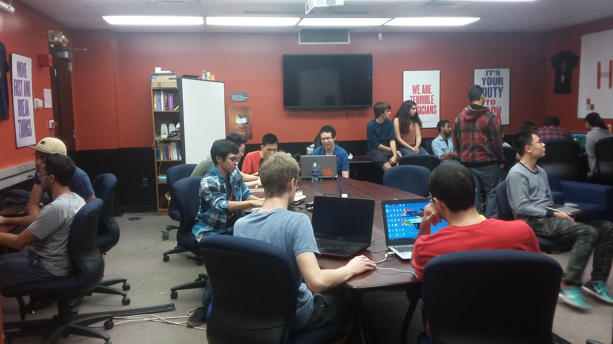

The Rutgers University Creation of Games Society is dedicated to researching, learning, understanding, and teaching the techniques and theories used in video game development in an environment which provides for its members a place expand their knowledge of the concepts and in which they may develop and design video games and theories in the field.
JOIN US
We meet every Tuesday night from 7:00 PM to 9:00 PM in the Hill Center Room 252 (The Cave).
Here is an inside look at our meetings!
Click on the images to make them bigger

X